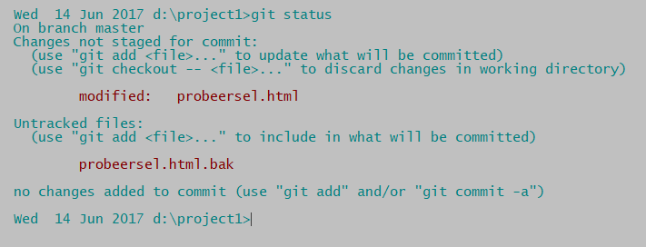
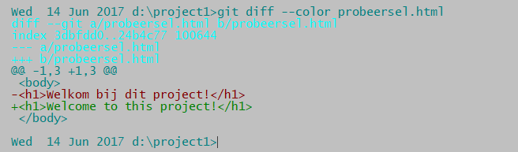
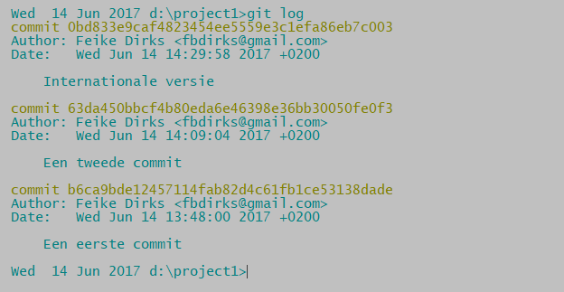

Bestanden veranderen
Verander probeersel.html bijvoorbeeld op deze manier:
De 'internationale' versie, om het zo te zeggen. Geef weer het commando
git status
Dit betekent dat sinds de laatste commit het bestand gewijzigd is, maar nog niet in de wachtkamer geplaatst. We kunnen er aan doorwerken zolang we willen. Als we het willen gaan toevoegen aan het project moeten we het wel in de wachtkamer plaatsen. In git kan een bestand alleen toegevoegd worden aan een project vanuit die wachtkamer.
We zien ook nog een tweede ding: er is een *.bak bestand bijgekomen. Dit is de backup die mijn editor gemaakt heeft van het oude bestand. Normaal gesproken hebben we er geen behoefte aan om deze bestanden ook in een git project op te nemen. Ze zullen dus de working directory nooit hoeven te verlaten. Maar we zullen ze wel steeds zien staan en dat is storend. Maar als we in deze map een bestand aanmaken dat .gitignore heet (let op de eerste punt) en in dat bestand opnemen:
*.bakWe keren terug naar het veranderde probeersel.html. Wat is het verschil met de oude versie? We geven dit commando:
git diffgit diff --color
Je ziet wat er niet meer in de nieuwe file staat (regels met een '-') en wat er juist wel in de nieuwe file staat (regels met een '+'). Het commando git diff is niet verplicht, het geeft je alleen een controle mogelijkheid.
De volgende stap is het verplaatsen van het gewijzigde bestand naar de staging area, de 'wachtkamer':
git add probeersel.htmlIn git betekent 'add': verplaats het (gewijzigde) bestand naar de staging area. Het kan dan gaan om een verandering aan een bestaande ('tracked') bestand, maar ook om een geheel nieuw bestand. Dit is soms verwarrend voor wie dit systeem niet gewend is. Als maar duidelijk is: ook veranderde bestanden moeten weer ge-add worden!
Als je nu weer een git diff doet zie je geen veranderingen meer. Het gewijzigde bestand zit nu al in de wachtkamer, git diff let alleen op bestanden die daar nog niet in zitten. Git diff kijkt alleen naar de verschillen tussen de bestanden waar aan gewerkt wordt en de staging area, niet op de verschillen tussen de repository (met de files die ge-commit zijn) en de staging area.
Als je wel het verschil tussen de laatste commit en de staging area wil zien doe je:
git diff --cachedNu gaan we onze veranderingen (die nu in de staging area zitten) committen, als het ware officieel maken dus. Als het commitbericht een regel is kun je dit ook rechtstreeks op de commandline opgeven:
git commit -m "Internationale versie"Soms wil je de commit-geschiedenis bekijken:
git log"
Je kunt een korte samenvatting bij iedere commit geven:
git log --stat --summaryOf je kunt bij een commit de volledige 'verschil geschiedenis' bekijken:
git log -p --colorDie laatste optie --color is optioneel. Deze actie is minder handig bij grote commits.